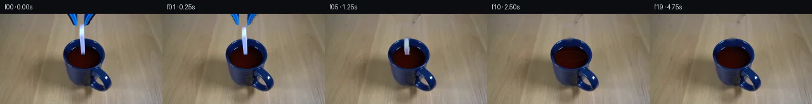

![首帧]()

Round 00
2026-11-04T22:34:18.290332+00:00像素候选变化代码 +249/−0inspection 更新
pixels 69567d28487f843e · code 2406ee9102e32cfb
查看本轮 generate.py 真实 diff
--- previous/generate.py
+++ current/generate.py
@@ -0,0 +1,249 @@
+#!/usr/bin/env python3
+"""Generate a 20-frame pixel continuation from the supplied first frame.
+
+The animation uses only local pixel extraction, local inpainting, affine motion,
+and analytic splash/ripple masks. It does not call a renderer or model.
+"""
+
+from pathlib import Path
+
+import cv2
+import numpy as np
+from PIL import Image, ImageDraw
+
+import artifact_io
+
+
+ROOT = Path(__file__).resolve().parent
+W, H = 256, 144
+
+
+def soft_polygon(points, blur=0.65):
+ mask = np.zeros((H, W), np.uint8)
+ cv2.fillPoly(mask, [np.asarray(points, np.int32)], 255)
+ if blur:
+ mask = cv2.GaussianBlur(mask, (0, 0), blur)
+ return mask.astype(np.float32) / 255.0
+
+
+def shifted_layer(source, alpha, dx, dy):
+ matrix = np.float32([[1, 0, dx], [0, 1, dy]])
+ moved_rgb = cv2.warpAffine(
+ source, matrix, (W, H), flags=cv2.INTER_LINEAR,
+ borderMode=cv2.BORDER_CONSTANT, borderValue=(0, 0, 0)
+ )
+ moved_alpha = cv2.warpAffine(
+ alpha, matrix, (W, H), flags=cv2.INTER_LINEAR,
+ borderMode=cv2.BORDER_CONSTANT, borderValue=0
+ )
+ return moved_rgb, moved_alpha
+
+
+def composite(frame, layer, alpha):
+ a = np.clip(alpha[..., None], 0.0, 1.0)
+ return frame * (1.0 - a) + layer.astype(np.float32) * a
+
+
+def liquid_clip():
+ """Soft mask constrained to liquid, safely inside the glossy mug rim."""
+ yy, xx = np.mgrid[:H, :W]
+ d = ((xx - 133.0) / 28.5) ** 2 + ((yy - 70.0) / 15.5) ** 2
+ # Interior ellipse with a one-pixel soft boundary.
+ return np.clip((1.0 - d) * 9.0, 0.0, 1.0).astype(np.float32)
+
+
+def ellipse_band(cx, cy, rx, ry, width):
+ yy, xx = np.mgrid[:H, :W]
+ q = np.sqrt(((xx - cx) / max(rx, 0.1)) ** 2 +
+ ((yy - cy) / max(ry, 0.1)) ** 2)
+ sigma = width / max((rx + ry) * 0.5, 1.0)
+ return np.exp(-0.5 * ((q - 1.0) / max(sigma, 0.025)) ** 2).astype(np.float32)
+
+
+def blend_color(frame, mask, color):
+ a = np.clip(mask[..., None], 0.0, 1.0)
+ return frame * (1.0 - a) + np.asarray(color, np.float32) * a
+
+
+def add_surface_motion(frame, t, clip):
+ """Add a compact impact followed by damped, perspective-flattened ripples."""
+ result = frame
+ # Small indentation before the crown forms.
+ if t == 4:
+ band = ellipse_band(130, 62.5, 4.2, 1.45, 0.75) * clip * 0.34
+ result = blend_color(result, band, (105, 31, 15))
+
+ # The crown and short-lived vertical droplets are rasterized at 4x for soft edges.
+ if 5 <= t <= 8:
+ strength = {5: 0.58, 6: 1.0, 7: 0.70, 8: 0.28}[t]
+ crown = ellipse_band(130, 63.5, 4.5 + 1.6 * (t - 5),
+ 1.5 + 0.30 * (t - 5), 0.85) * clip
+ result = blend_color(result, crown * 0.48 * strength, (122, 42, 20))
+ inner = ellipse_band(130, 64.0, 2.0 + (t - 5),
+ 0.65 + 0.18 * (t - 5), 0.55) * clip
+ result = blend_color(result, inner * 0.38 * strength, (20, 3, 5))
+
+ ss = 4
+ overlay = np.zeros((H * ss, W * ss), np.uint8)
… diff truncated; 162 more lines …